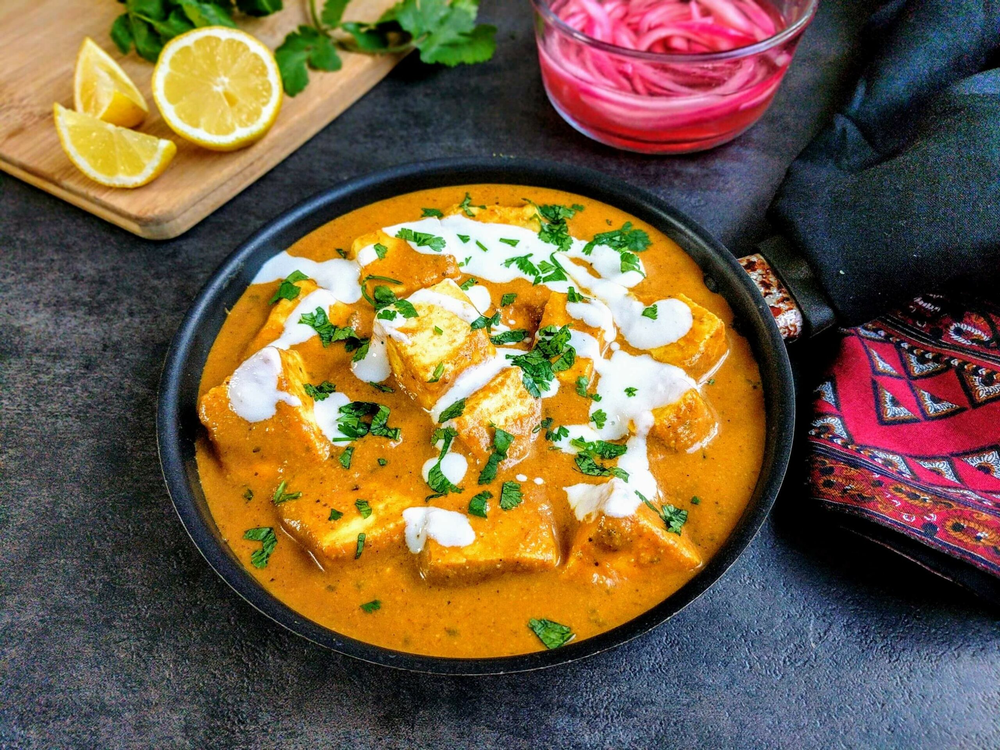

Jollof Rice
Spicy West African rice dish cooked in a flavorful tomato sauce with chicken thighs.
Ingredients
- Rice
- Tomato paste
- Bell peppers
- Onions
- Chicken thighs
- Scotch bonnet pepper
- Stock cubes
Instructions
- Blend tomatoes, peppers, and onions into a smooth mix.
- Fry the mixture in oil until rich and thick.
- Add chicken, seasoning cubes, and stock. Simmer gently.
- Add washed rice and cook until the liquid is absorbed and the rice is tender.
- Serve with grilled chicken thigh and garnish with fresh vegetables.
Nutrition
- Calories: 520
- Protein: 9g
- Carbs: 70g
- Fat: 18g

Paneer Butter Masala
Rich and creamy Indian curry made with paneer, butter, and a spiced tomato sauce.
Ingredients
- Paneer (Indian cheese)
- Butter
- Tomatoes
- Cream
- Ginger & Garlic
- Spices (garam masala, chili powder, turmeric)
Instructions
- Sauté onions, garlic, and ginger until golden.
- Add tomato puree and spices, cook until fragrant.
- Stir in cream and butter, simmer.
- Add paneer cubes and simmer for 5 minutes.
- Serve hot with naan or rice.
Nutrition
- Calories: 430
- Protein: 14g
- Carbs: 22g
- Fat: 32g

Spaghetti Carbonara
Classic Italian pasta with pancetta, eggs, and Parmesan cheese.
Ingredients
- Spaghetti
- Pancetta
- Eggs
- Parmesan cheese
- Black pepper
Instructions
- Boil spaghetti until al dente.
- Fry pancetta until crispy.
- Whisk eggs and Parmesan together.
- Toss pasta with pancetta, remove from heat, and stir in egg mixture.
- Serve immediately with extra Parmesan and pepper.
Nutrition
- Calories: 570
- Protein: 21g
- Carbs: 60g
- Fat: 28g

Classic Cheeseburger
Juicy grilled beef patty topped with cheddar, lettuce, tomato, and onion on a soft bun.
Ingredients
- Beef patties
- Cheddar cheese slices
- Burger buns
- Lettuce leaves
- Tomato slices
- Onion slices
- Ketchup, mustard, mayo
Instructions
- Grill beef patties on a medium heat until cooked to desired doneness.
- Toast burger buns lightly.
- Place lettuce, tomato, and onion on the bottom half of the bun.
- Place the patty and a slice of cheddar cheese on top.
- Top with condiments and serve with fries or salad.
Nutrition
- Calories: 650
- Protein: 28g
- Carbs: 38g
- Fat: 40g
Vegan Bibimbap
Traditional Korean mixed rice bowl with sautéed vegetables, tofu, and spicy gochujang sauce.
Ingredients
- Steamed rice
- Firm tofu, cubed
- Spinach
- Carrot, julienned
- Cucumber, sliced
- Shiitake mushrooms, sliced
- Bean sprouts
- Gochujang sauce
Instructions
- Cook the rice and set aside.
- Pan-fry tofu until golden on all sides.
- Sauté each vegetable separately in sesame oil, adding a pinch of salt.
- In a bowl, layer rice, tofu, and vegetables neatly.
- Top with a dollop of gochujang and mix before eating.
Nutrition
- Calories: 480
- Protein: 17g
- Carbs: 52g
- Fat: 20g

Chicken Shawarma
Middle Eastern marinated chicken, grilled to perfection and served in a wrap with garlic sauce and pickled veggies.
Ingredients
- Boneless chicken thighs
- Yogurt
- Garlic, lemon juice
- Cumin, paprika, turmeric, cinnamon
- Pita bread or flatbread
- Pickled cucumber
- Garlic sauce or tahini
Instructions
- Marinate chicken with yogurt, lemon, garlic, and spices for at least 2 hours.
- Grill the chicken until charred and cooked through.
- Slice thinly and wrap in pita bread with pickles, garlic sauce, and lettuce.
- Serve warm with a side of fries or salad.
Nutrition
- Calories: 530
- Protein: 25g
- Carbs: 30g
- Fat: 32g

Mexican Beef Tacos
Authentic Mexican tacos filled with spiced ground beef, fresh salsa, and creamy guacamole.
Ingredients
- Ground beef
- Soft corn tortillas
- Onion, garlic, chili powder, cumin
- Fresh tomato salsa
- Guacamole
- Shredded lettuce
- Cheddar cheese
Instructions
- Sauté ground beef with onion, garlic, and spices until cooked.
- Warm tortillas and fill them with beef mixture.
- Top with salsa, guacamole, lettuce, and cheese.
- Serve with lime wedges and hot sauce if desired.
Nutrition
- Calories: 480
- Protein: 20g
- Carbs: 35g
- Fat: 28g

German Bratwurst & Sauerkraut
Traditional German pork sausages served with tangy sauerkraut and mustard on the side.
Ingredients
- Bratwurst sausages
- Sauerkraut
- Onions
- Butter
- Dijon mustard
- Pretzel buns (optional)
Instructions
- Grill or pan-fry bratwursts until browned and cooked through.
- Sauté onions in butter until caramelized, add sauerkraut, and simmer.
- Serve sausages with sauerkraut, mustard, and pretzel buns if desired.
- Pair with German beer for an authentic experience.
Nutrition
- Calories: 600
- Protein: 22g
- Carbs: 25g
- Fat: 45g